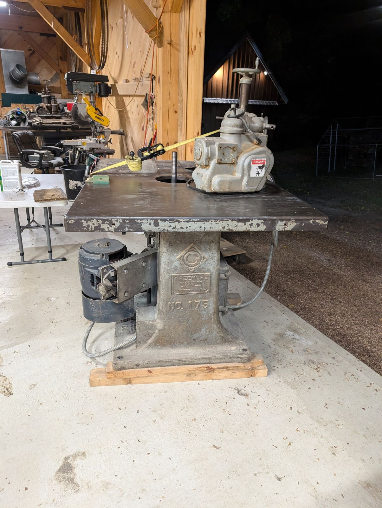
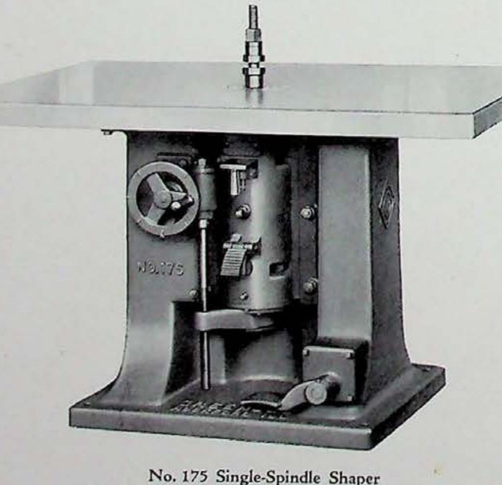

No. 175 Single-Spindle Shaper
Profile work on a vertical spindle · 100-Series · July 1929

The machine
The shaper is the most versatile machine in a millwork shop and the one that demands the most of its operator. A profiled cutter spins on a vertical spindle rising through the middle of the table; the work is fed against it, and whatever shape is ground into the cutter appears on the wood — moldings, door edges, drawer lips, curves worked freehand against a collar. Everything a shop could not buy off the shelf came off the shaper.
This example
Serial 42313 was poured in July 1929 — the last full summer of the boom, three months before the crash. The iron shows it. The 175 is massive out of all proportion to the cut it takes, because in the summer of 1929 nobody had yet thought of a reason to make a machine lighter. That mass is not vanity: a shaper’s finish quality is vibration written in reverse, and this casting simply refuses to vibrate.
It is the first of three shapers in the collection, standing thirty-eight years ahead of the matched pair of 1967 — the same idea, restated across four decades.
From the Catalog

“These Shapers are known as heavy machines. Not heavy because of meaningless cast-iron, but because of having sufficiently heavy frames and details to make them perfectly rigid even when the high-speed spindles are called upon to handle maximum cuts.” Greenlee Bulletin No. 175-182 · November 1929
- Table
- 56″ × 40″
- Standard motor
- 4 h.p.
- Net weight
- 2,100 lbs
The bulletin went to print in November 1929 — four months after serial 42313 left Rockford.
Catalog scan courtesy of VintageMachinery.org.